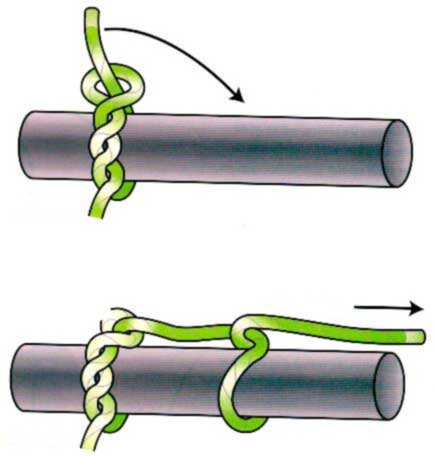

Timmersteek en muilslag
Gebruik
De timmersteek is bedoeld voor het verslepen van langwerpige voorwerpen door water of over land. De steek houdt goed op ruwe oppervlakten zoals boomstammen, maar heeft de neiging te slippen op gladde wateroppervlakken. Bij de scouts wordt de timmersteek ook soms als alternatief voor de mastworp gebruikt, als begin van een sjorring. Een belangrijke variant is de timmersteek met muilslag. Die 'muilslag' is een extra halve steek, die bedoeld is om de trekrichting te fixeren.
Methode
Leg eerst een gewone timmersteek (fig.1). Met natuurtouw (o.a. sjortouw) zijn drie torns (=draaiingen, woelingen) voldoende, maar met het moderne gladde touw is het beter om wat extra torns te nemen. In rechtsgeslagen touw worden de torns in de richting van de slag gelegd. Zorg ervoor dat de timmersteek gedraaid is in de richting van de trekkracht. Je legt best de laatste halve steek, de muilslag, altijd zo dat het werkend eind (= het uiteinde van het touw waarin de knoop wordt gelegd) in dezelfde richting te voorschijn komt als bij de timmermanssteek (fig. 2). De halve steek vermindert de breeksterkte van de timmersteek tot 70 %.
